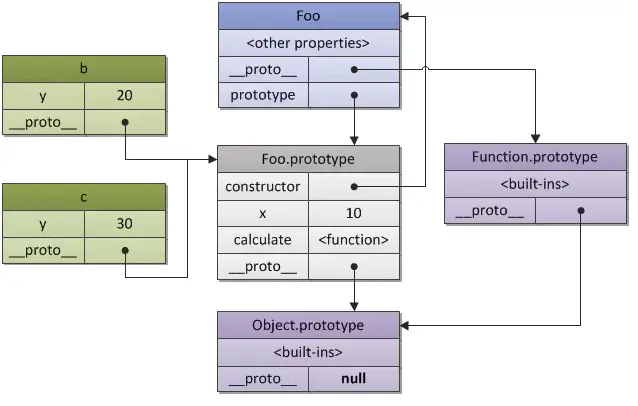

参考

什么是原型链
每一个对象都可以有一个__proto__属性,它还可以指向其函数的原型对象(prototype)，以此类推，形成原型链。查找属性时，先在当前对象上查找，
若没有则会向对象原型查找，对象原型再向对象原型原型查找，以此类推，最后若没有则返回undefined
原型指针 __proto__ prototype
prototype属性是函数独有的，指向一个对象，包含所有实例共享的属性和方法。
prototype.constructor指向创建对象的函数本身
__proto__在原型链查找中使用，总指向构造函数的原型对象。
new的本质
1、创建一个新对象obj
2、要实例化对象的原型链指向obj.prototype
3、call/apply改变this的指向，即this替换成obj
4、返回obj